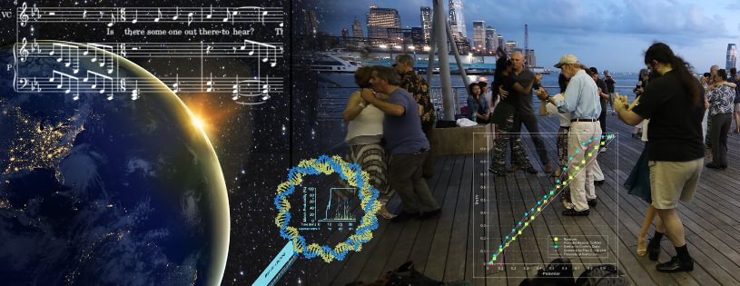

Daniel Speyer's Facebook Mirror
See also rss feed
Interplanar travel rules seek plot...
Interplanar travel rules seek plot...
Each universe is adjacent to exactly 240 other universes (mathematically sophisticated dimensional travelers claim this proves there are really only 8 dimensions, but their explanation of why is pretty confusing). Magi in any universe can attempt summoning spells, specifying what sort of beings they would like to bring in from adjacent universes. Magi in those universes can hear the conditions, and, if they fulfill them, allow the spell to summon them. If so, they arrive in the center of the first mage's diagram.
While you can hear a summoning from any adjacent universe, it must come from a place in that universe reasonably close to your current spatial location. There's no hard limit, but a few hundred kilometers is where things become unreliable for typical magi. If either the summoner or summonee is particularly skilled, it can be farther. Fortunately, celestial motion tends to be the same across universes.
This combination ensures the number of summonings to filter through is finite, and usually manageable. Sifting through large numbers of summonings to find a useful one is a skill, generally pretty easily learned. If you have a simple idea of what's useful going in, that makes it easier.
A potential summonee doesn't get to know much about the summoner, but does know which universe they hail from. It is common for summoners to smuggle information about themselves into their summoning conditions, though (“I summon a being who … and is willing to work with an associate professor of wizardry who upholds strict halacha”). Not that such clues are necessarily true.
You can travel quickly across your own world by bouncing in and out of summonings, but this is risky. If a single summoner is treacherous, or a single expected summoner is absent, the quick shortcut can make for a long delay.
Colleges of magic routinely put out summonings every hour for “Any member of this college who wishes to return home and accepts that the current time is … and its rsa signature is ...”. Travelers are strongly advised to hold on to their computers with synchronized clocks and the public key, but those who lose them can still answer and hope no one is bluffing. Since most travelers do hold on to those computers, not many people try bluffing.
A common pattern of summonings is to call for “someone who means promises and promises to ...”. This is common enough that ambitious interplanar travelers turn themselves into the sort of people who mean promises to have more destinations open to them. That said, people who mean promises in an ordinary sense can still go back on them if they feel excessively taken advantage of. Summoners can specify a higher standard, but may find their summons unanswered as a result.
There exists a universe known as Hell, inhabited by fiends. Fiends are universally magi, often physically powerful, and always compulsively cruel. No one knows why they're like this. Best consensus guess is that they were created by ancient naturally-evolved magi who made a horrible mistake and were killed by it. Getting to Hell is easy: there's always a fiend summoning “anyone willing to come here” in the hopes of getting a fresh victim. But this hardly ever works, so mostly fiends are cruel to each other, and the weaker ones (still powerful by normal standards) will do almost anything to get away. Unless you're trying to summon a fiend, it's advisable to check every summoning condition to make sure fiends can't fit it. If you are trying to summon one, it's best to aim for one that's extremely serious about promises (known as a devil) and which promises to obey your every order and take no independent action. They'll make that promise because it gets them away from other fiends. But they'll still interpret your orders in the way that lets them cause the most harm if you leave any ambiguity.
(Many casters routinely say a summoning for “any non-fiend in hell” just in case somebody's stuck there, but hardly any of them have actually gotten someone. Saving the fiends from themselves is the sort of question that frustrates ethicists, not that anyone has a plan.)
Like the time travel rules, I think this provides a lot of classic tropes for summoning and multiverse hopping while maintaining coherency. It also allows for an ambiguously infinite total multiverse and a wide set of immediate opportunities without having any story-breaking infinities. And I like making summoning and travel sides of the same coin, so summoner and summonee are current roles, not inherent natures.
Privacy: Public
Sep 14 3:52PM
Time travel rules seek plot...
Time travel rules seek plot...
Going back in time causes timelines to fork. They will try to re-merge, but not in ways that produce causal cycles.
So when you go back, the new timeline will be trying to keep in sync with the old one, but the old one will not be affected by the new one until you go back.
What does it mean for a timeline to try something? All quantum randomness is weighted to be more likely to produce that outcome. How weighted? Just short of looking macroscopically weird.
If you're not deliberately engineering opportunities for quantum randomness to have influence, its best multiplier is usually actions of people or other vertebrates who were on the edge of a decision to begin with. A single malfunctioning voltage-gated-sodium channel can nudge a mutual suppression neural circuit to land in the other stable configuration.
If you are deliberately engineering opportunities, your own brain is still a decent receiver. If you calm your normal thoughts and listen to the silence, you'll hear malfuctioning V-G-Na channels. But if you have access to higher tech, you can program a narrow neural auto-encoder and hook up its narrowest layer to a radioactive randomness source.
Either way, if you want to receive a deliberately-sent message between worlds, you should pre-commit to carve it out of something bulky (which the sender should also do, so that the multiverse will take the messages' matching seriously). If you want to get a message from the multiverse itself, commit to do whatever it says. Just remember that the multiverse does not love you, and is just using you to get the number of active timelines down.
So there is a point in going back in time and killing the big bad as a child. Once you go back, everything he does will be fighting against luck that wants to make it as if he'd never ruled. Though if he's already done things that are hard to undo (like killed lots of people) luck is just as likely to raise up a similar big bad in the other timeline.
And going back can produce butterfly effect nightmares, but most of the time it doesn't.
And it makes sense to talk about people corresponding in different timelines, even if the fork point was before their conception.
And you can have the thing where someone goes back in time, and you don't know what they've done, but you start noticing changes.
All in all, I think this gets you a lot of classic time travel tropes while maintaining consistency.
Privacy: Public
Sep 14 3:46PM
This is a test.
This is a test.
Actually, it's a testing platform. Close enough.
Sep 14 3:34PM
Sons of Martha v2
Now with swapped verses, a tempo change that doesn't come out of nowhere, and a harmony that's 10% less boring.
-- Sons Of Martha
[Sons of Martha v2
Now with swapped verses, a tempo change that doesn't come out of nowhere, and a harmony that's 10% less boring.
-- Sons Of Martha](https://secularsolstice.github.io/songs/Sons_of_Martha/gen/?_1Fn5ShldydIMGKI5L9BvvSD6wwH_4qKUkbJprFEcPk)
Sep 01 2:41AM
[Elizabeth Tawanda TubbsDaniel & Lizz Go to Hungary 2023. tagged me] Traveling guidelines i’ve learned
Traveling guidelines i’ve learned:
1. Destinations are better chosen by the route first
2. Plan A should never be the last available of anything
3. Always have a plan B and C
4. Locate a source of snacks and necessities first thing
5. Pack less than you think you should
6. Plane departure time does Not mean deadline for arriving at gate.
7. Utilize available airport accessibility services
8. get a medium amount of small bills in country currency by ATM for tipping and cash-only gelato
9. Get public transit passes
10. Don’t fall for “excursion” packages
11. Google translate is your friend, google maps is your enemy.
12. Check all your credit cards, cell phone plan, etc. for travel benefits and choose travel focused rewards programs
13. Learn key phrases in the local language both spoken and written like “no cheese” “large coffee” “thank you” “another coffee” “closed” “sorry for rolling over your foot” and “Do you have Mountain Dew?”
14. MOST IMPORTANTLY travel with a companion that still smiles with you like this 👇 throughout 36 hrs straight of plane travel; getting lost in the rain and heat over multiple countries; after 13 days in your constant uninterrupted presence; and in the midst of you losing important items, being perpetually tardy, constantly swiping their ponytail holders, insisting on stopping for coffee ☕️, and making them take selfies with you everywhere
Please add your own guideline additions in the comments!
Since I’m always curious when others post their trips, i’ll share what i recall of the trip costs:
flight there and back ~$1300 (would have been less without our particular logistics)
hotels: $100 when we got stranded in Z and $80 in Budapest. The other days were comped thru rewards programs. (This is me bragging. I’m very pleased with myself by this)
Other costs:
Food- (mostly coffee, pastries, gelato, and a couple dinner splurges)
Activities- museum entrances, mozart concert, Heviz lake, boat rental, ferris wheel
Transit: $25 unlimited Hungary train and bus ticket
$40 train to vienna and budapest
Taxis: to and from hotels and airports because suitcases ~$100
Tips-cash
Souvenirs
The largest expense by far, just like the Bahamas, was the plane tickets. It was also the greatest stressor. Future trips are going to prioritize streamling the flight ✈️ also going to explore other class and seating options, as leg room is more significant than i realized.
The second largest expense was food. That is not going to change lol
Aug 04 1:41AM
[Elizabeth Tawanda TubbsDaniel & Lizz Go to Hungary 2023. tagged me] Traveling guidelines i’ve learned
Traveling guidelines i’ve learned:
1. Destinations are better chosen by the route first
2. Plan A should never be the last available of anything
3. Always have a plan B and C
4. Locate a source of snacks and necessities first thing
5. Pack less than you think you should
6. Plane departure time does Not mean deadline for arriving at gate.
7. Utilize available airport accessibility services
8. get a medium amount of small bills in country currency by ATM for tipping and cash-only gelato
9. Get public transit passes
10. Don’t fall for “excursion” packages
11. Google translate is your friend, google maps is your enemy.
12. Check all your credit cards, cell phone plan, etc. for travel benefits and choose travel focused rewards programs
13. Learn key phrases in the local language both spoken and written like “no cheese” “large coffee” “thank you” “another coffee” “closed” “sorry for rolling over your foot” and “Do you have Mountain Dew?”
14. MOST IMPORTANTLY travel with a companion that still smiles with you like this 👇 throughout 36 hrs straight of plane travel; getting lost in the rain and heat over multiple countries; after 13 days in your constant uninterrupted presence; and in the midst of you losing important items, being perpetually tardy, constantly swiping their ponytail holders, insisting on stopping for coffee ☕️, and making them take selfies with you everywhere
Please add your own guideline additions in the comments!
Since I’m always curious when others post their trips, i’ll share what i recall of the trip costs:
flight there and back ~$1300 (would have been less without our particular logistics)
hotels: $100 when we got stranded in Z and $80 in Budapest. The other days were comped thru rewards programs. (This is me bragging. I’m very pleased with myself by this)
Other costs:
Food- (mostly coffee, pastries, gelato, and a couple dinner splurges)
Activities- museum entrances, mozart concert, Heviz lake, boat rental, ferris wheel
Transit: $25 unlimited Hungary train and bus ticket
$40 train to vienna and budapest
Taxis: to and from hotels and airports because suitcases ~$100
Tips-cash
Souvenirs
The largest expense by far, just like the Bahamas, was the plane tickets. It was also the greatest stressor. Future trips are going to prioritize streamling the flight ✈️ also going to explore other class and seating options, as leg room is more significant than i realized.
The second largest expense was food. That is not going to change lol
Aug 04 1:41AM
Sons of Martha v2
Now with swapped verses, a tempo change that doesn't come out of nowhere, and a harmony that's 10% less boring.
-- Sons Of Martha
[Sons of Martha v2
Now with swapped verses, a tempo change that doesn't come out of nowhere, and a harmony that's 10% less boring.
-- Sons Of Martha](https://secularsolstice.github.io/songs/Sons_of_Martha/gen/?-88UB4wadrvN8V33wcFmztRJbdJGKa19lXf78)
Sep 01 2:42AM
[Elizabeth Tawanda TubbsDaniel & Lizz Go to Hungary 2023. tagged me]A compilation of a few of the coffees I consumed in my travels. There were many many more.
[[Elizabeth Tawanda TubbsDaniel & Lizz Go to Hungary 2023. tagged me]A compilation of a few of the coffees I consumed in my travels. There were many many more.
](https://mbasic.facebook.com/story.php?story_fbid=pfbid0Vg9xmR8nkyadhQNh2zGMkcZGugKmKjnR4BnkTtVTmkdTjnH7zsnBrMGqM8A5yMCrl&id=1517329694&eav=Afbene2utfpdz2Mu9xSOiXut6R4NiB-veP7edjtgyoh5FwCjymkkZZn0nocuTfsojXE&refid=17&ft=encrypted_tracking_data.0AY-bUdfld63zswC5vtmc9ZjPH0LsAiJxpMpdEOtNiRJ5zX2RjKJxZWO90lx7ORLNm3CKHKjgHJMxIDZZKkxSfrNcUYexIa1RqN6lRtxrj9jHjVJPRq6a09ZZHYChSdG7iUWSjMngCTQ1Kjmja9D131LDGsOnr36XP2b079_kP1Y43Aisx4Zww8vxfgSua-vrxNgmRq_7FGb1jLlLjnVlpBiOXrWeKfbbxLbRzbkwi-l7wK6OMIc5tlVSLziEqvyXzg2QY361Y2ssAIfH9czbpmc8bMJcjpD8a1opyvYg_HsYUxY6xNspRCZTl-DyCrWobJtY8SJiD3dSKVjwFdQrWrOYCcEnHPdPHCSgqUhRLiU-2UZ8HdI57OcBBv_eFzlNWVeuSakCCYSSJGxSiOj_jO2WaDxOJCYqPHsqS9opxXRQwO3v_IgahVVTk7BXEm_5Mlft3LIz91XKRo9uo2XIsOfKIZDEZb9ME606lGKb5sqPqh8WI9W6AhsyZz4uc1PJP-53OUe0XfLJgK9qy0YkemrU_FsQFsekaFucPvPmCVF50oiy-cpmFyDS2CnhwmbDvo70YGbm83QArnTulsQOH20hd4d9umRLADc0040chz0s9iUGeki62f8OMHk1ry-U9_1C7DQLl5jZyn8K_0Frsmy_RPfznGz9HrwaJX4I8lUx0MC3C5fBMwrMPfsj_jlbDnoqznPxoGDCk62ofTNJMS045gdHmAB1mSTdfG0VmJetLbl2_R5EfkluitxaRRdZX1GC0F3RS_3m_aw3tpzMGwBGxucpCtkMwM1rmH5BwGlgFR_1mOLc7s_eHHd4gAXPIiQ1xvLP6ol2iCZ1JRml_9Mm9iXN-xf1Vf2BUWEBYqKy9sFKsxl0g36fhUAq6hJLsuROLqV58yc&tn=%2AW-R&paipv=0)
Aug 04 12:39AM
[Elizabeth Tawanda TubbsDaniel & Lizz Go to Hungary 2023. tagged me] Traveling guidelines i’ve learned
Traveling guidelines i’ve learned:
1. Destinations are better chosen by the route first
2. Plan A should never be the last available of anything
3. Always have a plan B and C
4. Locate a source of snacks and necessities first thing
5. Pack less than you think you should
6. Plane departure time does Not mean deadline for arriving at gate.
7. Utilize available airport accessibility services
8. get a medium amount of small bills in country currency by ATM for tipping and cash-only gelato
9. Get public transit passes
10. Don’t fall for “excursion” packages
11. Google translate is your friend, google maps is your enemy.
12. Check all your credit cards, cell phone plan, etc. for travel benefits and choose travel focused rewards programs
13. Learn key phrases in the local language both spoken and written like “no cheese” “large coffee” “thank you” “another coffee” “closed” “sorry for rolling over your foot” and “Do you have Mountain Dew?”
14. MOST IMPORTANTLY travel with a companion that still smiles with you like this 👇 throughout 36 hrs straight of plane travel; getting lost in the rain and heat over multiple countries; after 13 days in your constant uninterrupted presence; and in the midst of you losing important items, being perpetually tardy, constantly swiping their ponytail holders, insisting on stopping for coffee ☕️, and making them take selfies with you everywhere
Please add your own guideline additions in the comments!
Since I’m always curious when others post their trips, i’ll share what i recall of the trip costs:
flight there and back ~$1300 (would have been less without our particular logistics)
hotels: $100 when we got stranded in Z and $80 in Budapest. The other days were comped thru rewards programs. (This is me bragging. I’m very pleased with myself by this)
Other costs:
Food- (mostly coffee, pastries, gelato, and a couple dinner splurges)
Activities- museum entrances, mozart concert, Heviz lake, boat rental, ferris wheel
Transit: $25 unlimited Hungary train and bus ticket
$40 train to vienna and budapest
Taxis: to and from hotels and airports because suitcases ~$100
Tips-cash
Souvenirs
The largest expense by far, just like the Bahamas, was the plane tickets. It was also the greatest stressor. Future trips are going to prioritize streamling the flight ✈️ also going to explore other class and seating options, as leg room is more significant than i realized.
The second largest expense was food. That is not going to change lol
Aug 04 1:41AM
...But we did explore the exterior (including courtyards) of Buda Castle after dark.
...But we did explore the exterior (including courtyards) of Buda Castle after dark.
It was a bit scary, with road access blocked (for political reasons?), limited signage, limited visibility, no map, disabled elevators, and assymetric mobility. Still, we made it in and out again.
Some of the photos I lightened in post so you can see things
Aug 03 2:54PM
We didn't have a lot of time in Budapest...
[We didn't have a lot of time in Budapest...
](https://mbasic.facebook.com/story.php?story_fbid=pfbid02CroG2w4LDe81x33VDbPZQTRrbnDRUfEp3edqsAEtBYiadCZCeuqwckbZoULEQ1hEl&id=1794288703&eav=AfbC1pjbzot5j_0_IyNYRcTd4bU-RN71AFIbJ-RKey7pItGuSYGbUpMwv_RTyQhPz0o&ft=encrypted_tracking_data.0AY8Fk7UfoOzivwITrZTVg4Ua_GB5Br8k-z9uaZOfGcGAZlqV_7nNNtwjw5FcRCj5ZW_ZfC6GOXXPALj0ztQ0XFRaBjESir8pISZVo9rZJHEc3OApSvWzpL7ZXsnzL3bLkBOiim7Aco9jDpt7n7LtU8uQkHy0IaBrwKNHu2j2NoSf7vjB8LkFZai_yC4ffDy0FtIBdFbWFxSbvdia4RY5IwzX7Kd-MUAv_VZVM-6aes0h6QGsCpdPL8ha3tsWfZwgZSJY4gxFYj5bwEzKUqGaiRQnuvvmVh6FGWLlzafLqfsEnB2-WPKS6uX6AjxleSi2oWsDIGYpGiXvDp6B9zKVnrLwCGN3i13SYO5CpV2JAibtyPB3s42DoD-cd1gkSVXyb9RwNT19WVQosnZvEknFkldGA1UJn2U6fvq95vsa06BH7Se2ZxBasutUR2Uj3ZyBb2wV3x5WpjNw8fR8lL9NREUfEbO7_vTExHyMwO9aoPiavh-sfYVNqf-dzL9B56BpvrjbpZ2fUQQkgMKgFtJRHhstlLCEEYtHUajZelATVgv1fd7hy6uHIIVMRSjqLeeMIqJgBjaTHJZYwRIAKljvTslh2eRdWSCl1Woka66zVu-qjxkPPmN3rFimySekC00JpRuxNby5pfqSYT7gW6Ng4iSSvgC8V1ACsIhV2VIzaQ-KH9UUM_1Q_GtLEL_6FoOJL__PY0k_fgUMNt4VZWOeRHot4EfhtnLrmcqIJS8p1ud_-a7qxInIUTf1Qh16M-QxOZvdMReG2LlwL3GI1H0gck519VQvQTMa5u-oBX9XVnH-yfnC7cHq35-NOqoW2mSuSe_UjgrkX8lZIzC2hpiVD_eBm0Y-N5fIsAEYNi1xq0grvGbwr3ZjxikJhS8NRJs&tn=%2AW-R&paipv=0)
Aug 03 2:46PM
Belvedere Vienna is a pair of massive baroque palaces joined by a formal garden.
Belvedere Vienna is a pair of massive baroque palaces joined by a formal garden.
Belvedere New Britain has a lot of catching up to do. At least install one life-size stature of a man fistfighting a horse!
Aug 03 2:37PM
When digging infrasctructure for a market, Vienna stumbled upon the officers quarters from the Roman fort that predated the city proper
When digging infrasctructure for a market, Vienna stumbled upon the officers quarters from the Roman fort that predated the city proper. They left them in place as an underground museum, and built a tall narrow museum for other Roman artifacts found in the city above it.
So next time people complain that NYC can't dig because we don't have records of what's underground...
Aug 03 2:30PM
The Snail Parliament is a model of the parliament building made entirely out of snail shells. It doesn't seem to be any sort of political statement about slowness -- the artist just really liked
The Snail Parliament is a model of the parliament building made entirely out of snail shells. It doesn't seem to be any sort of political statement about slowness -- the artist just really liked snails.
Aug 03 2:01PM
We didn't intend to go to Zalaegerszeg, but the last northbound train through Sumeg was late, and arrived at exactly the time the last southbound train was supposed to
We didn't intend to go to Zalaegerszeg, but the last northbound train through Sumeg was late, and arrived at exactly the time the last southbound train was supposed to, with no indication of which way it was going. Zalaegerszeg was the city we could get to that had vacancies in its hotels. So we spent some time wandering, and did see some nifty stuff.
Aug 03 1:55PM
Festetics Palace also has a large greenhouse full of cacti. Why? Why not.
[Festetics Palace also has a large greenhouse full of cacti. Why? Why not.
](https://mbasic.facebook.com/story.php?story_fbid=pfbid02gtwHzf4XeDY9gL7rUYcMvssoNiJrV5JwfxVKymXr2Pr9Sk8HTWUqyZxYBqUDbn8cl&id=1794288703&eav=AfbFrajqItY-xFZQ3la-DWE1Gt5WAGYDr0ruZ_hoVL99La5obaDb4txQHgZIu1YBEqY&ft=encrypted_tracking_data.0AY9JD9UxNrudApJT4sSABhTa_7bGQjVMgVbCaukxeE5xKD1GwfHPeaU2Ududeg3HIrnZeAgsUoqjxqx_PYBqoiVL1cnAL4ti5CCdWVheg1MMHflK0Xzds7IR6fQkEOOeWQlqUP4CknooDo63N1QY8eumlB5XSxvquZvjZKI0alCtEwfSAvJDOFZaLY2ujLG_YJJN_457ANBjDQkbybwd_RcO9AAxgWzF3FsTnpd3F5zP2MG3ZHUucrOzjlyrLrvgt8IDr-_Kson4LfhpObNjjdDw7JW2KSQ2mkyo7JNP6aDmbPGlcZ3tQLQAUMK-5RD7-Me28eFm1KNmjRMuvYEW-_UFRid49hPeId9z-WNdZ91hsyuleGftraXMo7mDH2HcxqGlKiOPWvWfrGTRBe7ErxeF_5iTCE57fyTIFliBIodv_SwXPazcab-T-L4UOLHcCtPq1y7ZkjknMGqaLJY946p5_hTXv73hN1AH6cvCXYgWFgMTaiBMuvq0JdgUk6z92H_bF6YoSRL8bz0o7VIG6TBVd2EUbXwKzuJnr8qz-8uW0mkmLwmJLW8WRHGVGS6Ur4JFc1HGeLm5lY1F-O5QgtTgJLEg8AV1-L7MGIh4g98zz1RGHwbzcvndMvteaX2mkq3Vwx0bYGNLSG9QlJ_GsnRLVRObWSPV1jt36xCVJk7idFSLobuwlctktV-Vxj5D_oYQXTK1tQjXnhncDDLVXOx2RPRkM2jb47zADrlgp9ZxsM7ZwF3a4AQmiRSb4f_9fmGFzYwpz4oaccWNSKFB3BV3TXTUCsUnHizc5ccyz9L8lUSUUw-HGMVonZXCGF2q-s-LIAkkGvORWFrLMObPQzSH_fzVcczko3RESyPWbo9HaJOAShthAS6fc2YLopXZ1aksIjkiJUjJqlZ9Wma0thJeyV5H6IajYxzf7O1VGW2Pcyo&tn=%2AW-R&paipv=0)
Aug 03 12:56PM
Festetics Palace (I *think* pronounced Fesh-te-titch) and some of its grounds
[Festetics Palace (I think pronounced Fesh-te-titch) and some of its grounds
](https://mbasic.facebook.com/story.php?story_fbid=pfbid02x2mUyhcysrAWzGTgvDhKtLSVKXdpUQ7yYpM9zRpfdUDxiUtmNvtwmVDUSNmauZDdl&id=1794288703&eav=AfbzZa2Uhq0Gf4GNtOeOVNKbE4qr7k3oUsf1DOs5Mj-sej1FRXSZVM1xAnZ_RCKr_8M&ft=encrypted_tracking_data.0AY9VHoiPXZMtcxNl4WgAdoTruHcMmngFIQ5Rd34Tm9QJ8Kp8cUrvoX8j7y5idFaFanaJ3ErGWBRY1quT9nid54aOny_OaMViJfTFSmGVV265UpvqLL6Pp5BwslehaUtAaMDZ97H6BrA6b-Thccaa2qhZ2rUX4NyH1HZk-TLPva70AA0RJp-0UAn70cm_AoKTnpstzr9iCG5iWC4_tmFtJd0OqnsSFhlXIH16288vdPinnWixDqeLAPMUtY83kyxFY0fHi9dNgOLGMjJsusEANOHvBJdaDWHKyD_HDG4I2VtnuFA85eeKLdh_zYir26KXidV5SHAVtd_D3VtN75wUwqtQQT8XK98_ar0khfqX-fdMRyr46niWahBbMnXhPUdJ12vkLbRd8WdA5SN5g6_h645kOt86h-ZtsR1aQchE50o17IFwGWs4fbzRKs6Ixj2v1l0XNdSdok8TfjLWT2H4VqPHTVek8N_KDTsLWlCNe1J6ezpjtjnNZH6Cra8jBM_uRezaCESFQmIIfm51GjVJnfs6WDflg9_O2PgfMYOxvqV5C4FzKi9YxwuQDtJQ5AOGT_o0S9l2Hc5zTdZazQB-JUcZg7a6q0E-MwmDw3KiWPPTYC2qy2LdTFFu3kyLVQUNoiLhXegVKSDQv8m9vzFnE_2CkSaurzYnwAHEZvFMMn7CSe5C3_9KyW_NVDEKVxzofyn6sjqEeA2kCHTWfow28tgLnTQ-Tieh0C2MpeAchtrMx_ZnmxCFASN174UP5DBLQOOO1N78oHtFje4BbMpgAOz1rMYD7raLOY_j-Dma9nJDgUpq0FrPfvoW__BJxEhFHW8TFHbLyHojtMybiC6yNEpL6_8ajHW9hiyOKo_ze3o1-BjAqEV-K9rkSQ6od6Zz3S_QOL73HmMOBgSOjUIS-ZvCkycNZ1UHSgRIbdZuH9WOmdg&tn=%2AW-R&paipv=0)
Aug 03 12:47PM
Keszthely has a variety of museums, small but clustered together
Keszthely has a variety of museums, small but clustered together:
The Butterfly Museum, whose actual butterflies were depressingly dead and pinned to boards, but whose fish and reptiles were impressive.
The Doll Museum, creepy as you might expect.
The Horror Museum, which freely mixed historical medieval torture and legends of Elizabeth Bathory and vampires.
The Historical Wax Museum, with rulers from Attila to the 1950s carefully recreated
The Erotic Wax Museum, mostly derived from the 17th and 18th centuries, at which I took no photos
The Snail Parliment, which has only one exhibit, and only needs one.
The Nostolgia Museum, which left me somewhat confused about what era Hungarians feel nostolgia for, and even more confused about why.
Aug 03 12:29PM
Lake Balaton is the largest lake in central Europe. It's surprisingly warm and clean. Keszthely has a sort of permanent festival on the lakeshore. Among the offerings are boat rentals
Lake Balaton is the largest lake in central Europe. It's surprisingly warm and clean. Keszthely has a sort of permanent festival on the lakeshore. Among the offerings are boat rentals. We tried to get far out enough to escape all city lights and look up at the stars, but the moist air over the lake turns to clouds when the sun sets. Still pretty.
Aug 03 12:18PM
[View edit historyElizabeth Tawanda Tubbs. tagged me] Let the photo deluge begin. Starting with Keszthely, the city we were based in for a week. Located at the west end of Lake Balaton
Let the photo deluge begin. Starting with Keszthely, the city we were based in for a week. Located at the west end of Lake Balaton. Not a big city, but a pretty one, with colorful buildings, wide pedestrian plazas, a 14th century church and various attractions that will get their own posts.
Aug 03 12:11PM
Walking along Broadway after a week in Europe has an interesting effect. I'm more aware of my environment
Walking along Broadway after a week in Europe has an interesting effect. I'm more aware of my environment. I think our buildings can stand proud alongside those in Hungary or Vienna's modern neighborhoods (Vienna old town, maybe not). At the same time, Broadway clearly should be pedestrianized, possibly with a tram as a mid-range, and the freed space should allow for a lot more open-air gelato stands.
Privacy: Public
Aug 31 7:31PM
[Elizabeth Tawanda TubbsDaniel & Lizz Go to Hungary 2023.->me] Day 5! Festetics Palace (pronounced Fish-sticks) the Festetics were THE family of Keszthely and their home has inspired me to spray
Day 5! Festetics Palace (pronounced Fish-sticks) the Festetics were THE family of Keszthely and their home has inspired me to spray paint EVERYTHING gold when i get home. That’s equivalent to the gold gilt, ya? 😅
My favorite room is the library 📚 (obviously) but every room was awe-inspiring.
Daniel got scolded for touching the bookcase door 🚪 😄
We also got to meet a duo of black swans 🦢 and wander a fantasy garden full of cacti 🌵 and hibiscus 🌺
Aug 01 1:43PM
[Elizabeth Tawanda Tubbsa new photoDaniel & Lizz Go to Hungary 2023.->me] My “vintage” hotel room doesn’t have a lot of amenities, but it does have a coffee maker! ☕️
My “vintage” hotel room doesn’t have a lot of amenities, but it does have a coffee maker! ☕️
I picked up a bag of cute cat 🐈⬛ grounds from a bakery/cafe and am gonna make All The Coffee (it’s a 6hr time difference here yo.) so i can stop pulling Daniel into every cafe we pass 😅
deep narrator voice it was not in fact a bag of coffee grounds that they purchased. This is a bag of Flour.
Jul 25 7:08AM
They will look for it from the ivory tower But it will not return from network or from C
They will look for it from the ivory tower But it will not return from network or from C
Through Bitcoin, over fen and field where the banned grass's sold The Crypt Wind comes walking and around the law it goes What news of crypto oh wandering wind do you bring to me tonight? Have you seen Symbiont the Bold by moon or by starlight?
I saw it spread over seven nodes, through network lag and drop I saw it typify python and all derive from top I saw it pass into Finance, where worth comes forth from myth The Cash Wind may have heard the horn of the son of Mark the Smith
O Symbiont through all web 3 I looked afar But you came not from Big Enterprise where no sales are.
Privacy: Public
Aug 31 7:31PM
[Elizabeth Tawanda Tubbs->me] I went to a lot of trouble (MK Ray and Daniel Speyer went to a lot of trouble…i mostly just hobbled after them squeeling) to get this gorgeous new chair!
I went to a lot of trouble (MK Ray and Daniel Speyer went to a lot of trouble…i mostly just hobbled after them squeeling) to get this gorgeous new chair!
I Knew, but hoped not, that it was only a matter of time. And that time was 24hrs.
Fyi she already has her own special purple armchair 😓
#TheQueenOnHerNewThrone
#ThoseCrazyEyesSayItAll
May 31 5:38AM
There's an Asmodean proverb: Never publicly criticize the boss unless you're trying to take their job.
There's an Asmodean proverb: Never publicly criticize the boss unless you're trying to take their job.
Prigozhin (head of the Wagner mercenary company) has been publicly criticizing Putin a lot.
Now, I realize Asmodeanism is a fictional religion written by people who are not remotely its practitioners, but I still find Prigozhin's actions make more sense through this lens.
Including his unforced withdrawal from Bakhmut. Sure, it looks weak now. But in a few monthes he'll be saying to Putin's forces, “We held the line in Bakhmut and even pushed it forward a little – you ran like dogs. Do you really want to face me now?”. And Putin's officers will answer “You held the line while the Ukrainians waited for equipment, not against the counter-offensive.” But, valid or not, this will sound like an excuse.
Will it work? Will Prigozhin be the next czar of Russia? Hard to say. On the one hand, he's managed to be visibly a contender for the post and keep breathing, which I don't think anyone else has managed. On the other, I'm not sure anyone likes him, and his strategy seems optimized for things happening slowly, which may not be the case.
Privacy: Public
May 26 4:24PM
The problem with conjunctive probabilistic reasoning is that it double-counts model uncertainty.
The problem with conjunctive probabilistic reasoning is that it double-counts model uncertainty.
(If you fully understood that sentence, you can skip the rest of this post.)
For those just tuning in, conjunctive probabilistic reasoning is when something requires a series of things to happen, so you estimate p(next step | previous step) for each step and multiply. The math suggests this should work, but in practice everything becomes less likely the more detail you think about it in. Eliezer and Zvi have written off this entire approach as the “multi-stage fallacy” despite the fact that it ought to work.
One straightforward error is to ignore multiple paths to a result. The p(I'll reach Fulton Street) isn't p(I can get on the 1 train)*p(I'll transfer successfully to the 2/3 at 72nd given I made the 1), because if the 2/3 isn't running I'll just stay on the 1 and transfer to the A/C at 59th. But most examples of this going wrong don't fall into this category.
Another is to give the probability of each step, instead of the conditional. Even though we very explicitly said to use the conditional.
Let's look at it another way. To have a 50% confidence something will work (entirely reasonable) when it can be broken into a hundred tiny steps (tedious, but generally possible) means having a harmonically average confidence of 99.3% that each step will succeed given the previous. Which is awfully confident to be of anything.
But why is that awfully confident to be of anything? Because there's more than a 0.7% chance that the understanding you're using to estimate these probabilities was flawed to begin with. Whenever we estimate the probability of anything, we're implicitly estimating p(that thing AND my model of the universe is good enough). (Well, assuming p(that thing EVEN THOUGH my model isn't good enough) is negligible, which is generally the case when that thing is a plan of mine working.)
Call the model assumption M and the kth step succeeding Sₖ (because unicode doesn't have a subscript I) and now we can simplify:
𝚷 p(Sₖ|Sₖ₋₁) = 𝚷 p(M & Sₖ|Sₖ₋₁) = 𝚷 p(Sₖ|Sₖ₋₁,M)p(M) = (𝚷 p(Sₖ|Sₖ₋₁,M))p(M)ⁿ
See that power of n at the end? That's our problem. Because the Ms aren't independent – they're the same event. If you use your normal habit for estimating probabilities, you get final probabilities falling exponentially with the number of steps you consider – exactly the problem we started with.
Which makes the solution obvious. Explicitly estimate all the conditional probabilities as also conditional on your world-model, and then estimate the probability of your model's adequacy and multiply it in once. AFAICT, this works. Granted, gaining calibration on estimates given model is probably a bit trickier than gaining calibration on estimates in general.
Privacy: Public
Aug 31 7:31PM
Left Job at SymbiontNew York, New York
Left Job at SymbiontNew York, New York
May 18 6:23AM
Reddit deleted all my subreddits and past posts. Bizarrely, they do seem to be letting me post new things, but I can't trust that.
Reddit deleted all my subreddits and past posts. Bizarrely, they do seem to be letting me post new things, but I can't trust that.
I was able to rescue the content, and I'll put some stuff various places, though of course links will die.
I can probably use github as a new fb rss mirror, though it won't have commenting. I didn't get many comments on the mirror, which is why putting them into an existing stream was important.
I realize this last part only matters if I start posting stuff again. I haven't in almost two months. But I do have fifteen open LibreWriter windows with half-written drafts, so there might be a storm soon.
Privacy: Public
Aug 31 7:31PM
[View edit historyAnn Speyer->me] Daniel Speyer, Ann Speyer and Kenneth Speyer just before we began our seder
Daniel Speyer, Ann Speyer and Kenneth Speyer just before we began our seder. It's now 11:45 and we just finished putting everything away -- a wonderful, long, seder full of readings, some discussions and of course, traditional songs. Soup with matzah balls, poached salmon, asparagus and sweet potato kugel. Dessert was almond cookies which Daniel and I made. Daniel did all the chocolate dipping. A very sweet way to end a wonderful night.
Apr 05 11:43PM
Untitled
Mar 29 5:34PM
Happy 3/23/23 23:23
Happy 3/23/23 23:23
232 is gematria for "braid", so Elizabeth Tawanda Tubbs braided my hair in a 2-3-2 pattern. Not sure if that comes through in the photo. There's inherent difficulties in photographing the back of my own head.
Mar 23 11:23PM
See also: older posts